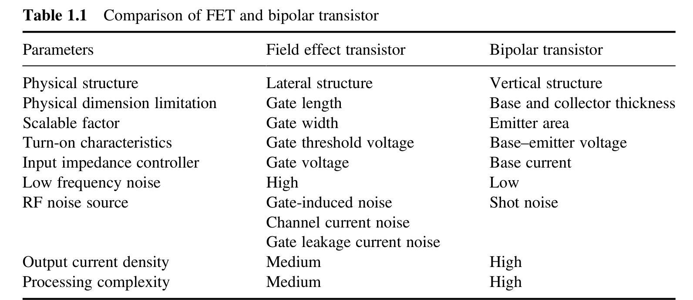
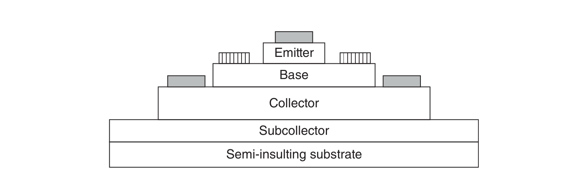
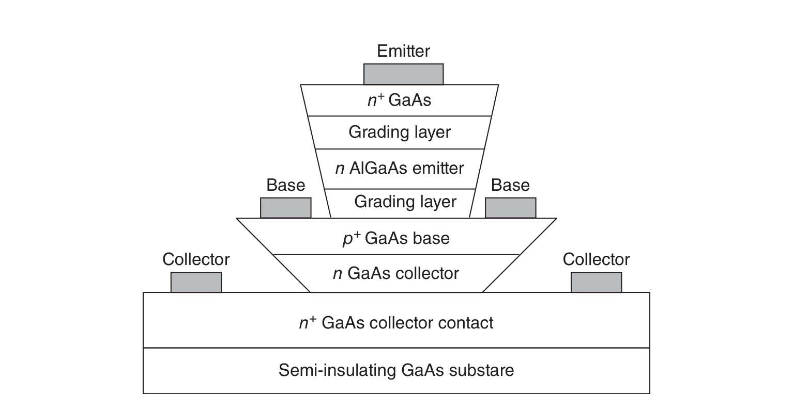
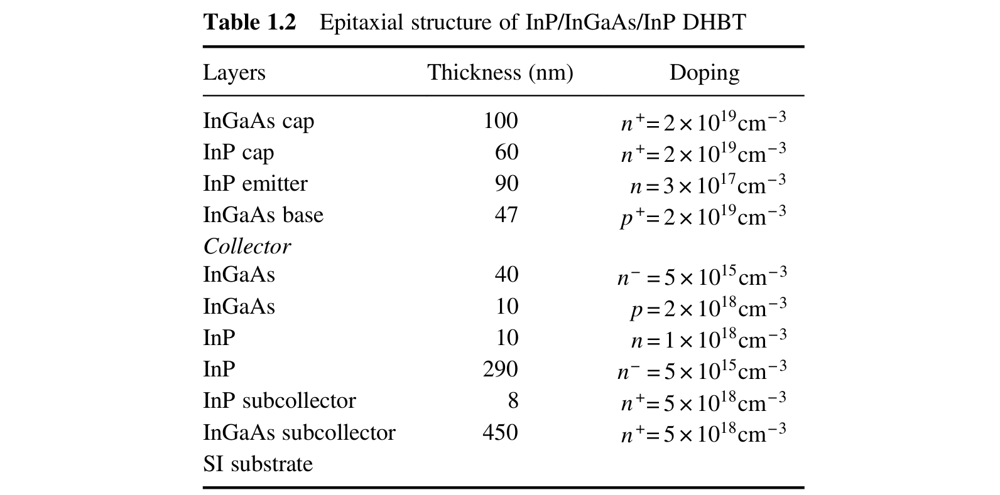
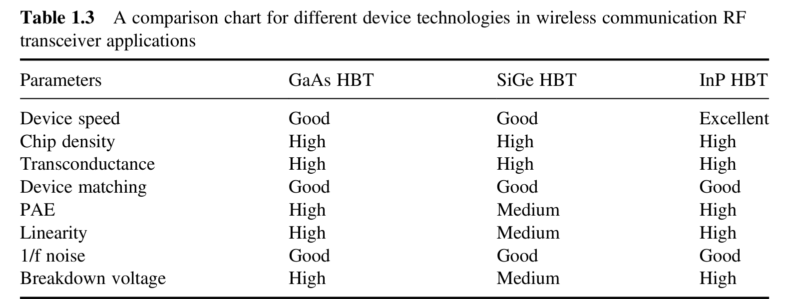
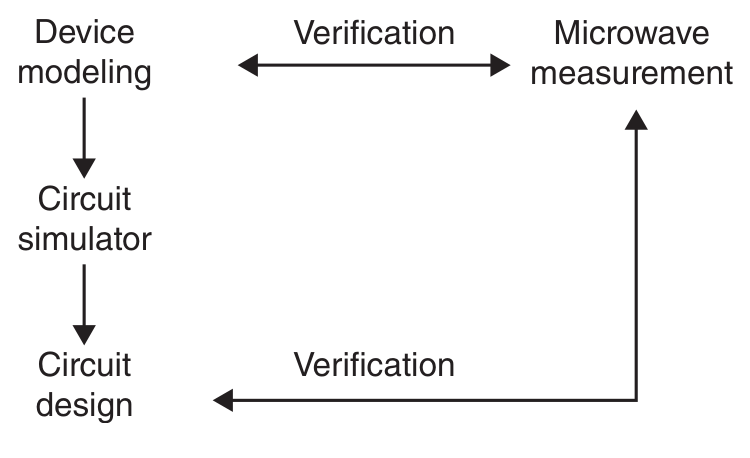

半导体材料体系可分为硅基器件与III–V族化合物半导体器件两大类[1, 2]。硅基半导体器件凭借其低成本、大批量生产的特点，随着沟道长度缩小至22 nm，其频率响应已得到显著改善。与之相对，化合物半导体器件则利用其本征材料特性，在单片微波集成电路等高频应用中提供了更为优越的器件性能。若从晶体管的工作原理来看，半导体晶体管技术按其载流子输运的物理机制又可分为两大类型：场效应晶体管（FET）与双极晶体管。双极晶体管包括双极结型晶体管（BJT）与异质结双极晶体管（HBT）。
表1.1比较了FET与双极晶体管器件的部分器件参数[3–5]。FET是多数载流子器件，电流沿横向传导；而双极晶体管是纵向器件，允许电子与空穴两种载流子参与导电。双极晶体管的速度由电子穿越薄薄的纵向基区–集电区（B–C）各层的渡越时间决定。FET的最高速度则由渡越时间决定，并受光刻工艺所定义的栅长控制。FET器件也因此被称为单极器件，因为其输运特性原则上仅由多数载流子决定。FET中漏极电流通过沟道宽度调制机制受栅极电压调制。FET的放大过程以跨导来表征，用以评估栅极电压对输出漏极电流的调制能力。另一方面，双极晶体管的集电极电流由从基区注入的少数载流子电流调制。双极晶体管等效于一个电流放大器：输入的基极电流被电流增益放大，输出电流在集电极端被"收集"。

可用于实现微波与射频集成电路（RFIC）的HBT器件技术有多种。常用的HBT器件如下：
III–V族化合物HBT（GaAs HBT与InP HBT）在很大程度上保留了硅器件的优点，同时将其拓展到更高频率。此外，硅双极晶体管的诸多缺点也可被克服。GaAs/AlGaAs材料体系中的HBT是先进材料技术的首批受益者。这类器件现已实现商业化，并即将应用于各种高性能电路。与传统硅器件相比，HBT具有以下几方面的优势[6]：
一个简单HBT的剖面如图1.1所示。在单异质结器件中，基区、集电区和亚集电区均采用同一种材料（如GaAs）；而在AlGaAs体系的双异质结器件（DHBT）中，例如会在发射区中掺入少量摩尔分数的铝以增大带隙。HBT的工作过程包含以下三个步骤[7]：(i) 少数载流子从发射区注入基区；(ii) 载流子在基区内的输运；(iii) 载流子在B–C结处的收集。在正常工作（正向偏置）状态下，电子从发射区注入基区，越过异质结构势垒。对于突变异质结势垒，电子注入源于热电子发射；而对于渐变的基区–发射区（B–E）结，电子则以扩散方式进入基区。C–B结处于反偏状态，空间电荷区内存在的高电场负责将电子收集到集电极端。

采用金属有机化学气相沉积（MOCVD）生长的GaAs/AlGaAs HBT的详细层结构如图1.2所示。所用的掺杂剂为：n型用硅，p型用碳。生长顺序从（100）半绝缘GaAs衬底上的n+-GaAs亚集电区层开始，接着生长n-GaAs集电区层，然后生长p+-GaAs基区层，随后是N-AlGaAs发射区层，最上面一层为n+-GaAs发射极接触层。发射区层由高掺杂（5×1018 cm−3）的GaAs帽层和宽禁带的Al0.3Ga0.7As层构成。帽层用于形成低阻发射极欧姆接触。Al0.3Ga0.7As层的掺杂浓度与厚度经过选择，以在尽量减小发射极电阻和E–B电容的同时，使反向击穿电压最大化。

InP基HBT与GaAs HBT相比，具有开启电压低、电子迁移率更高、散热性能更好、微波性能更优等优势，同时仍能保持较高的集电区–基区击穿电压。InP HBT已成功用于实现40 Gb/s光通信的复杂数字集成电路。本书所用的InP HBT由商业厂商采用气态源分子束外延（GSMBE）在半绝缘（100）InP衬底上生长。p型与n型掺杂剂分别采用Be和Si。InP/InGaAs/InP DHBT的详细层结构见表1.2[8]。为了规避电流阻断效应，采用了在InGaAs/InP界面处布置偶极掺杂的InGaAs/InP复合集电区结构。器件采用三次台面工艺制备，发射极尺寸各不相同。发射极、基极和集电极欧姆接触均采用非合金Ti/Pt/Au。随后通过电镀金气桥将发射极、基极和集电极接触连接到外部的引线键合焊盘。

与III–V族化合物半导体器件相比，硅基器件具有成本低、集成度高以及可能实现单芯片解决方案等优势[9]。与III–V族化合物器件相比，硅作为半导体材料还具有诸多实用优势，包括[10]：(i) 可以在硅上轻易生长出质量极高的介质层（SiO2）并用于隔离；(ii) 易于生长大尺寸、低成本、无缺陷的晶体；(iii) 易于掺杂和制作欧姆接触；(iv) 硅具有优异的热特性，能有效导出耗散的热量；(v) 硅具有优异的机械强度，便于操作与加工；(vi) 容易在硅上制作阻值极低的欧姆接触。通过在常规硅BJT中采用应变且组分渐变的SiGe作为基区层，SiGe HBT获得了与GaAs技术相当的射频性能，而其制造成本与可靠性与硅工艺相近。与III–V族HBT相比，硅基器件的本征热导率更高；与硅BJT相比，SiGe HBT兼具带隙工程的灵活性以及基区和发射区掺杂浓度的调节能力。SiGe技术与现有硅CMOS工艺的兼容性，为未来高频混合信号电路提供了强有力的组合。各种器件技术在无线通信射频收发机应用中的定性性能对比列于表1.3。

集成电路的分析与设计在很大程度上依赖于对电路元件（即无源与有源器件）合适模型的运用。无论是手算分析（通常采用较为简单的模型），还是计算机辅助设计（CAD）软件（涉及更为复杂的模型），皆是如此。在电子学领域，从工艺、器件、电路到系统的集成的几乎每一个环节，都已有高度先进的CAD工具可用于设计、分析与仿真。现代CAD工具的应用提供了一条改进途径。随着这些工具的复杂度与精度的不断提高，设计周期可以显著缩短。目标是开发出精度足够、可实现一次设计成功的CAD工具。CAD工具需要不断改进，直到所设计元器件的仿真射频性能与实测性能良好吻合为止。这样，工程师就能在实施流片之前，在工作站上完成设计、仿真和全面测试。为实现这一目标，就需要精度更高的CAD工具。
商用射频与微波CAD软件有两类：基于物理的CAD软件和基于等效电路的CAD软件。基于物理的CAD软件以半导体中输运的基本方程作为分析的出发点。基于等效电路的CAD软件则解决这样一个问题：除等效电路之外，还需要了解器件的哪些信息才能预测其噪声性能。当前最先进的有源微波电路CAD方法严重依赖于实际器件的模型。模型使得器件或集成电路的射频性能可以被确定为工艺与器件设计信息以及偏置和射频工作条件的函数。等效电路器件模型必须建立在从实验数据精确提取参数的基础之上。模型使得器件或集成电路的射频性能可以被确定为工艺与器件设计信息以及偏置和射频工作条件的函数。
微波与射频测量技术是微波射频器件与电路表征的基础。微波射频集成电路同样需要借助微波射频测量加以验证。需要指出的是，与粗略测量不同，微波射频测量技术属于高精度测量——微小的误差就会给半导体器件建模与参数提取，以及使用前述器件模型设计的相应射频集成电路带来巨大偏差。图1.3给出了器件建模、微波测量与电路设计三者之间的关系。

本书余下的部分将着力阐述双极器件（BJT与HBT）的微波射频建模与参数提取技术。本书的重点在于如何测量微波性能，以及如何为双极器件建立线性、非线性和噪声模型。
第2章讨论半导体器件建模的基本概念，向读者介绍二端口网络的表征及其用一组参数（阻抗、导纳、混合、传输和散射参数）表示并写成矩阵形式的方法，随后阐述用于半导体器件参数提取的去嵌入（de-embedding）流程。
第3章介绍PN结的物理结构与工作概念，并将PN结理论应用于双极晶体管的分析。关于各种BJT模型，我们把讨论限制在最常用的类型，如Ebers–Moll模型和Gummel–Poon模型。
在第4章中，基于对BJT的分析，介绍异质结的基本概念。异质结结构的完整分析涉及量子力学，文中给出了相应的详细计算，并回顾了GaAs HBT与InP HBT的物理结构与工作概念。第5章描述GaAs HBT与InP HBT的小信号建模与参数提取方法。第6章讨论HBT线性与非线性模型之间的关系，并简要介绍基于经验等效电路的模型。第7章论述HBT的噪声建模与参数提取方法，介绍噪声参数的确定方法，包括基于调谐器的方法和基于噪声系数的方法。第8章介绍SiGe HBT的物理结构与工作概念，并给出相应的小信号模型和大信号模型。
第9章介绍常用微波射频测量技术的基本概念，并阐述直流与S参数在片测量系统的搭建。